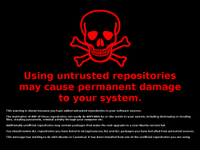

Fremdquellen
Bei einem anderen bekannten Betriebssystem installiert man Software üblicherweise, indem man im Internet die Homepage des Herstellers sucht, ein Binärpaket herunterlädt, das Programm installiert und dann startet. Dies ist sehr mühselig, wenn man viele verschiedene Programme installieren möchte und bringt eine hohe Wahrscheinlichkeit mit sich, sich auch mal mit unseriöser Software zu infizieren. Zusätzlich wird die Aktualisierung des Systems mit Updates mit der Anzahl installierter Programme zunehmend aufwendiger.
Die Installation von Software unter Ubuntu (und anderen freien Systemen) läuft deswegen über eine zentrale Paketverwaltung. Aus Paketquellen (engl. Repositories) kann man eine große Menge an Software installieren, die vom Distributor – im Falle von Ubuntu die Firma Canonical  – getestet und auf die Distribution angepasst wurde.
– getestet und auf die Distribution angepasst wurde.
In den meisten Fällen reichen die Programme aus den offiziellen Quellen von Ubuntu aus. Tausende Programme können mit nur wenigen Mausklicks installiert werden. Allerdings ist die Linux-Softwareszene sehr dynamisch. Täglich entstehen neue Programme und neue Versionen, die dann erst in kommenden Ubuntu-Versionen über die Paketverwaltung zur Verfügung stehen werden. Und einige Programme werden aufgrund einer restriktiven Lizenz niemals in den Ubuntu-Repositories verfügbar sein.
In diesen Fällen kann es nötig sein, Software aus einer separaten Quelle auf dem eigenen Rechner zu installieren. Dies können alternative – von Dritten betriebene – Paketquellen, einzelne fertig kompilierte .deb-Softwarepakete oder direkt aus dem Quellcode kompilierte Programme sein.
Risiken¶
Die Benutzung fremder Quellen für Software sollte nach Möglichkeit auf das Notwendigste beschränkt werden, da sie einige gravierende Nachteile mit sich bringt.
Schäden an der Paketverwaltung¶
In den Ubuntuusers.de-Foren melden sich regelmäßig Anwender, die Probleme mit der Paketverwaltung haben. Synaptic, Muon und Co. weigern sich z.B. weitere Software zu installieren, weil Abhängigkeiten nicht aufgelöst werden können.
Beispielsweise erfordert ein von Hand installiertes Paket Bibliotheken in Versionen, die nicht aus den Standard-Repositories installiert werden können. Installiert man ein entsprechendes Paket hinzu, kommt es evtl. später zu Konflikten, wenn ein anderes Paket mit dieser Version wiederum nicht klar kommt. Das wäre aber nur ein harmloses Problem, was sich relativ leicht beheben ließe. Generell lässt sich jedoch sagen, je komplexer das über Fremdquellen installierte Programm ist, je mehr Pakete installiert oder sogar aktualisiert werden müssen, desto wahrscheinlicher sind Probleme.
Upgrade auf die nächste Ubuntu-Version verhindern¶
Besonders zu Tage treten diese Probleme, wenn man auf eine neue Ubuntu-Version upgraden möchte, da in diesem Falle meistens jede Menge neuer Pakete installiert bzw. aktualisiert werden müssen. Die Entwickler von Ubuntu achten darauf, dass sich ein System von einer Ubuntu-Version auf die nächste aktualisieren lässt. Befinden sich aber eine Vielzahl fremder Pakete im System, so kann es vorkommen, dass das Upgrade unmöglich gemacht wird. Schließlich können die Ubuntu-Entwickler nicht jedes Problem mit Drittsoftware im Voraus erahnen. Einzelne Anwendungsprogramme sind in diesem Zusammenhang weniger kritisch zu betrachten, doch wenn es sich bei der Fremdsoftware um wichtige Systembibliotheken handelt, sind Komplikationen vorprogrammiert.
Im Extremfall ist der Update-Manager nicht in der Lage, die bestehenden Konflikte aufzulösen und bricht das Upgrade ab. Dies kann dann sogar in einem nicht mehr startbaren System resultieren.

Einschmuggeln von Schadsoftware¶
Schließlich muss man auch die Sicherheit des Systems im Auge behalten. Fremder Leute Software auf dem eigenen Rechner zu installieren ist gleichbedeutend damit, ihnen kurzfristig Root-Rechte auf dem Rechner einzuräumen. Bei der Installation von Software aus unseriöser Quelle ist faktisch möglich, dass wichtige Systemkomponenten gegen manipulierte Versionen ausgetauscht werden, um Hintertüren oder "Trojaner" in das System einzubauen.
Im Falle fremder Paketquellen kann beispielsweise der Betreiber eine angeblich aktuellere Version eines wichtigen Softwarepaketes in sein Repository aufnehmen. Die Paketverwaltung erkennt dieses neue Paket und installiert es automatisch ohne dass der Benutzer selber merkt, dass dieses Paket kein offizielles Update aus den Ubuntu-Quellen ist.
Sowas passiert in der Realität nicht? Falsch! Siehe dazu "Eine kleine Geschichte über fremde Paketquellen" 
Vertrauen¶
Generell ist die Installation von Software eine Frage des Vertrauens. Tatsache ist, dass man jeder Quelle vertrauen muss, aus der man Software installiert - egal, ob das nun die offiziellen Ubuntu-Repositories sind, weithin bekannte unabhängige Paketquellen oder irgendjemand, den man aus dem IRC kennt. Vertrauen muss dabei auf zwei Ebenen vorhanden sein. Erstens muss man den Autoren bzw. den Administratoren der Webseiten vertrauen, dass sie selber integre Menschen sind und die Gemeinschaft nicht übers Ohr hauen wollen und zweitens muss man den Leuten zutrauen, den betreffenden Server sicher zu administrieren bzw. einen eventuellen Einbruch einerseits schnell zu erkennen und zum anderen nicht unter den Tisch zu kehren.
Dass man als Ubuntu-Anwender der Ubuntu-Foundation und der Firma Canonical soweit vertraut, sollte klar sein, denn ansonsten muss man sich eine andere Distribution suchen. Inwieweit man Dritten das gleiche Vertrauen entgegenbringt, muss jeder Anwender für sich selbst entscheiden.
Zusätzliche Paketquellen¶
Oft stellen Entwickler eigene Paketquellen zur Verfügung, die man zur Paketverwaltung des eigenen Systems hinzufügen kann, um immer mit ihren neuesten Programmentwicklungen versorgt zu werden. Oder Dritte betreiben eigene Repositories, um der Allgemeinheit einen einfachen Weg zu bieten, in den Genuss der neuesten/alternativen Versionen beliebter Software zu kommen.
Das ist im Grunde genommen auch zu begrüßen, aber die Risiken wurden bereits weiter oben geschildert. Man kann sagen, je mehr Pakete eine Paketquelle enthält, desto wahrscheinlicher werden Probleme mit der Paketverwaltung. Auch viele inzwischen obsolete Skripte wie Automatix oder EasyUbuntu sind in diesem Licht zu betrachten, denn dies sind alles keine offiziellen Projekte von Ubuntu. Die Änderungen, die Programme wie Ubuntu Tweak vornehmen, sind nicht immer direkt nachzuverfolgen. Der Benutzer erfährt in der Regel nicht, was diese Programme machen und wie sich die Änderungen auswirken. Somit hat er auch nicht das Wissen, die Änderungen wieder rückgängig zu machen.
GPG-Signaturen¶
Deb-Pakete in Paketquellen werden mit GnuPG-Schlüsseln digital signiert. Passt die Signatur zu keinem der Paketverwaltung bekannten Schlüssel, so wird der Benutzer bei der Installation eines Paketes aus solch einer Quelle gewarnt (in neueren Ubuntu-Version sogar verweigert). Drittanbieter stellen daher oft ihren GPG-Key zur Verfügung, den man dann in seinen Keyring importieren muss.
Wichtig ist aber, was schon weiter oben zu den zwei Stufen des Vertrauens beschrieben wurde. Ein GPG-Key kann keine von beiden ersetzen. Er kann nur beweisen, dass die Pakete wirklich vom Besitzer der Paketquelle stammen und nicht nachträglich verändert wurden. Des Weiteren kann ein GPG-Key, der auf demselben Server liegt wie die Dateien, die mit ihm signiert sind, von einem Einbrecher mit Leichtigkeit mitsamt den Dateien ausgetauscht werden. Einfach den GPG-Key zu importieren und dann die Software zu installieren, sagt deswegen gar nichts über die Authentizität der Software aus.
Allerdings schützt der Schlüssel einen in Zukunft, wenn man Updates lädt und der Server in der Zwischenzeit kompromittiert wurde. Außerdem ist es für einen Site-Admin weitaus einfacher, regelmäßig seinen auf dem Server hinterlegten GPG-Key auf Veränderungen zu überprüfen als die Prüfsummen aller Pakete zu vergleichen. Ob der Besitzer eines Repositories das auch macht, kann aber außer ihm selbst keiner wissen.
In gewisser Weise ist das Nichthinzufügen des GPG-Schlüssels für manche Benutzer ein Sicherheitsaspekt. Denn werden in solchen Fremdquellen Pakete aktualisiert, meldet dies auch der Updatenotifier von Ubuntu. Man kann aber nicht immer genau erkennen, aus welcher Quelle das Paket kommt. Fügt man den Schlüssel nicht hinzu, erhält man bei solchen Fremdpaketen immer eine Warnung und man kann es sich gegebenenfalls noch einmal anders überlegen, ob man das Update wirklich installieren will.
Um einen Schlüssel hinzuzufügen, ist die einsteigerfreundlichste (weil grafische) Methode, den Schlüssel als Textdatei abzuspeichern und dann über System -> Systemverwaltung -> Synaptic Paketverwaltung -> Einstellungen -> Paketquellen -> Authentifizierung zu importieren.
In einem Terminal kann durch die Eingabe folgenden Befehls dasselbe erreicht werden:
sudo apt-key adv --recv-keys --keyserver keyserver.ubuntu.com FINGERPRINT_DES_SCHLÜSSELS
Nach der Installation des Schlüssels müssen nur noch die Paketquellen neu gelesen werden.
Binärdateien und einzelne Deb-Pakete¶
Manchmal bietet jemand vorkompilierte Programme oder Deb-Pakete an, ohne ein Repository aufzusetzen - insbesondere wenn es sich um spontan erstellte Pakete handelt, nach denen bspw. in einem Forum gefragt wurde und weil der Ersteller nicht dauerhaft Support dafür leisten möchte. Auch hier sind wieder alle Risiken von fremden Paketen und Programmen relevant:
Woher kommen die Pakete/Binärdateien?
Wer hat sie erstellt?
Was beinhalten die Pakete?
All diese Fragen sollte man sich eigentlich vor der Installation stellen und eventuell doch lieber ein eigenes Paket direkt aus dem Quellcode erstellen. Viele Einsteiger schrecken davor zurück, doch es ist keine große Kunst und nach einer Hand voll selbst kompilierter Programme Routine.
Davon abgesehen sind solche einzelnen Pakete nicht GPG-signiert. Via Attachment-Funktion in einem Forum mag das keinen großen Unterschied machen, da der Autor über seine Benutzer-ID zumindest einigermaßen zugeordnet werden kann (inkl. dem Vertrauen, dass man diesem speziellen Benutzer entgegenbringt - oder auch nicht). Doch gerade .deb-Dateien, die man aus zweifelhaften Quellen per E-Mail erhalten oder von dubiosen Internetseiten bezogen hat, sind mit gebührender Vorsicht zu genießen. Im Allgemeinen sollte man sich als Bezugsquelle für Software deswegen lieber auf die Homepage des Projektes und die dort empfohlenen Quellen beschränken, falls der Quellcode offen vorliegt. Andernfalls muss man mit den dort angegeben Binärdateien/Paketen vorlieb nehmen.
Quellcode¶
Das ubuntuusers.de-Forum ist sehr aktiv, manch ein Hobbyprogrammierer tummelt sich in deren Mitte. Ab und zu findet man gepatchte Programmdateien, die ein kleines Problem beseitigen oder eine bekannte Schwachstelle des Systems beheben. Trotzdem wird jedem Nutzer empfohlen, nicht bedenkenlos Systemdateien zu ersetzen!
Es werden keinem Mitglied der Gemeinschaft böse Absichten unterstellt, doch als Programmierer sollte man lieber einen Patch bereitstellen, so dass man als Benutzer die Änderungen nachvollziehen kann und dadurch selber in der Lage ist, das Programm inklusive den Änderungen zu kompilieren.
Auch wenn man als einzelner Anwender zufällig nicht in der Programmierung bewandert ist und ein Patch einem wie chinesisch oder klingonisch vorkommt, besitzt ein Quellcode-Patch doch eine höhere Vertrauensstufe, weil (absichtliche oder unabsichtliche) Fehler eben doch früher oder später von einem Kundigen entdeckt werden können.
Links¶
Ikhaya: "Eine kleine Geschichte über fremde Paketquellen"
11/2006schroot - Möglichkeit zum sichereren Ausprobieren von Fremdquellen
Fully Countering Trusting Trust through Diverse Double-Compiling
- Hintergrundinformationen zu Angriffen auf Entwicklerwerkzeuge
- Erstellt mit Inyoka
-
 2004 – 2017 ubuntuusers.de • Einige Rechte vorbehalten
2004 – 2017 ubuntuusers.de • Einige Rechte vorbehalten
Lizenz • Kontakt • Datenschutz • Impressum • Serverstatus -
Serverhousing gespendet von